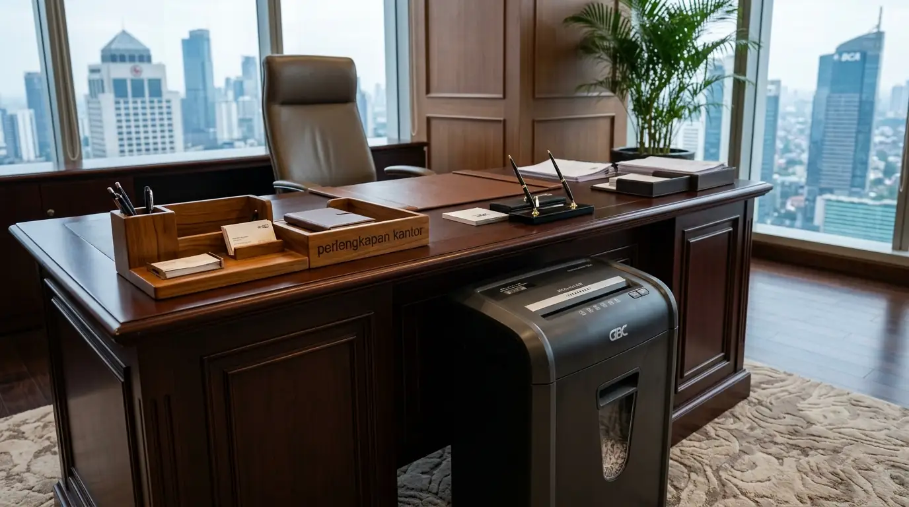

Mengapa Mesin Penghancur Kertas GBC Menjadi Pilihan Utama Korporat?
Layanan jual paper shredder GBC murah menawarkan perangkat pemusnah dokumen berteknologi canggih Jam-Free yang menjamin proses penghancuran berkas berlangsung tanpa kendala kertas tersangkut. Dalam era kepatuhan regulasi perlindungan data pribadi dan kerahasiaan bisnis (UU PDP di Indonesia), membuang kertas dokumen kerja tanpa dihancurkan membawa risiko hukum dan kerugian finansial yang masif bagi perusahaan.
Berdasarkan Laporan Keamanan Informasi Korporat Indonesia 2025, sebanyak 68,4% kebocoran data internal perusahaan bersumber dari dokumen fisik yang dibuang utuh ke tempat sampah tanpa dihancurkan secara benar. Riset dari Global Office Equipment Survey 2026 mengonfirmasi bahwa penggunaan mesin penghancur kertas GBC tipe heavy duty mampu meningkatkan kecepatan pemusnahan berkas hingga 70% berkat fitur pencacahan otomatis tanpa perlu ditunggui staf (hands-free shredding).
Kelebihan utama pemanfaatan unit paper shredder GBC meliputi:
- Tingkat Kerahasiaan Tinggi: Pilihan tipe potong Cross-Cut (DIN P-4) dan Micro-Cut (DIN P-5) mengubah lembaran kertas menjadi serpihan mikro yang mustahil dirangkai kembali oleh pihak yang tidak berwenang.
- Efisiensi Pengadaan: Didesain khusus untuk pemakaian intensif harian dengan siklus kerja (duty cycle) kontinu tanpa henti, cocok untuk departemen keuangan, legal, dan HRD.
- Fitur Hemat Daya & Senyap: Dilengkapi modul Sleep Mode otomatis yang memutus daya saat mesin dalam kondisi idle, serta motor Whisper-Shred yang tidak menimbulkan kegaduhan di ruang kantor.
| Tipe Potongan GBC | Ukuran Hasil Cacahan | Tingkat Kerahasiaan Dokumen |
|---|---|---|
| Strip-Cut (DIN P-2) | Strip Panjang 6 mm | Dokumen Internal Umum & Draf Kerja Non-Krusial |
| Cross-Cut (DIN P-4) | Partikel 4 x 40 mm | Berkas Keuangan, Laporan Pajak & Surat Kontrak |
| Micro-Cut (DIN P-5) | Serpihan Mikro 2 x 15 mm | Data Rahasia Negara, Audit Perbankan & Berkas Otentikasi |
- Standar DIN 66399 P-4 memotong satu lembar A4 menjadi sekitar 400 partikel, sedangkan P-5 memotongnya menjadi lebih dari 2.000 serpihan mikro.
- Teknologi Anti-Jam GBC secara otomatis membalikkan putaran pisau jika jumlah kertas melebihi kapasitas sensor ketebalan.
- Penggunaan wadah kantong daur ulang mempermudah pengelolaan limbah kertas korporat yang ramah lingkungan.
Apa Saja Pilihan Tipe Paper Shredder GBC yang Paling Banyak Diberikan?
Variasi produk pada pusat jual paper shredder GBC murah mencakup tipe personal untuk meja kerja eksekutif, tipe Executive Auto Feed, hingga mesin kapasitas besar untuk ruang filing dan kearsipan terpusat.

Mesin penghancur kertas GBC heavy duty dari penyedia perlengkapan kantor untuk proteksi berkas rahasia korporat.
GBC Auto Feed Heavy Duty
Tipe Auto Feed Heavy Duty memungkinkan pengguna memasukkan tumpukan berkas mulai dari 300 hingga 750 lembar kertas sekaligus ke dalam baki penyimpanan berkunci PIN (lockable paper chamber). Mesin kemudian akan menarik dan memotong seluruh lembaran secara otomatis lapis demi lapis tanpa perlu ditunggui staf, menghemat puluhan jam kerja staf administrasi setiap bulannya.
GBC Executive Personal Shredder
Dirancang dengan dimensi yang ramping namun berdaya potong tinggi, tipe ini sangat ideal ditempatkan di samping meja direksi, ruang kerja notaris, atau bagian legal yang sering kali memusnahkan dokumen otentik segera setelah rapat selesai tanpa harus berjalan ke ruang arsip umum.
- Untuk pemusnahan berkas berkapasitas besar, pertimbangkan paper shredder gbc auto feed heavy duty terbaik.
- Pelajari fitur keamanan mesin penghancur kertas gbc micro cut untuk proteksi berkas keuangan.
- Temukan daftar pilihan harga paper shredder gbc grosir jakarta untuk pengadaan instansi.
Bagaimana Cara Merawat Paper Shredder GBC Agar Tahan Lama?
Perawatan rutin pada mesin penghancur kertas GBC sangat sederhana namun krusial guna menjaga ketajaman pisau baja karbon dan memastikan motor penggerak beroperasi pada performa maksimal selama bertahun-tahun.
- Penggunaan Minyak Pelumas Khusus: Melumasi mata pisau baja menggunakan Shredder Oil atau lembaran Oil Sheet setiap kali wadah sampah penuh atau minimal dua kali sebulan untuk mencegah gesekan kering yang memicu keausan pisau.
- Pembersihan Sensor Otomatis: Menyapu akumulasi debu kertas yang menutupi mata sensor auto start-stop menggunakan kain mikrofiber kering atau kuas lembut agar mesin tidak menyala terus-menerus.
- Kepatuhan Kapasitas Lembar: Selalu memasukkan kertas sesuai batas kapasitas maksimal yang disarankan agar motor penggerak tidak mengalami beban berlebih (overload) dan panas mesin tetap terjaga stabil.
- Jangan pernah menggunakan oli motor atau minyak pelumas aerosol aerosol (WD-40) karena uap kimianya berisiko memicu kebakaran pada motor listrik berkecepatan tinggi.
- Jalankan fungsi Reverse selama 10 detik setelah melumasi pisau untuk meratakan lapisan pelumas ke seluruh celah roda pemotong.
- Kosongkan kantong sampah sebelum tumpukan kertas menyentuh bagian bawah bilah pisau pemotong.
Apa Saja Kesalahan Utama Dalam Pengadaan Mesin Penghancur Kertas?
Berdasarkan pengalaman tim konsultan fasilitas kantor kami, banyak perusahaan terjebak dalam beberapa kesalahan pengadaan yang mengakibatkan pemborosan anggaran:
- Kapasitas Baki Tidak Sesuai: Membeli mesin tipe personal kecil untuk melayani pemakaian bersama satu lantai kantor memicu pemanasan mesin berlebih (thermal shutdown) dan memperpendek usia komponen motor.
- Mengabaikan Jenis Bahan yang Dihancurkan: Memaksa memasukkan dokumen berlaminasi tebal, plastik perekat, atau kardus kemasan ke dalam mesin yang hanya dirancang untuk kertas dan klip standar dapat merusak bilah pemotong.
- Membeli Produk Tanpa Garansi Resmi: Tergiur penawaran murah dari penjual tidak resmi yang tidak menyediakan garansi suku cadang original, kartu garansi terdaftar, dan teknisi panggilan jika mesin mengalami kendala.
Membeli dari penyedia jual paper shredder GBC murah yang merupakan distributor resmi memastikan Anda mendapatkan unit 100% original, dukungan suku cadang berkelanjutan, dan klaim garansi yang pasti.
Pertanyaan Populer Seputar Jual Paper Shredder GBC Murah (FAQ)
Kesimpulan Praktis
Membeli mesin pemusnah dokumen melalui distributor jual paper shredder GBC murah adalah langkah tepat untuk mengamankan data rahasia instansi Anda dengan investasi yang efisien dan jaminan purna jual terpercaya.
Segera tingkatkan standar keamanan informasi di kantor Anda bersama kami. Kami menyediakan aneka pilihan mesin pemusnah kertas GBC, peralatan arsip, dan perlengkapan kantor terlengkap dengan harga distributor langsung. Hubungi tim konsultan kami hari ini untuk penawaran harga grosir terbaik!
Penulis: Tim Peralatan & Keamanan Kantor
Divisi konsultasi peralatan kantor dan proteksi arsip korporat di Perlengkapan Kantor. Berfokus pada implementasi teknologi keamanan informasi fisik, kepatuhan regulasi perlindungan data dokumen, dan distribusi mesin kantor berstandar industri internasional. Ditinjau oleh Spesialis Pengadaan Korporat.